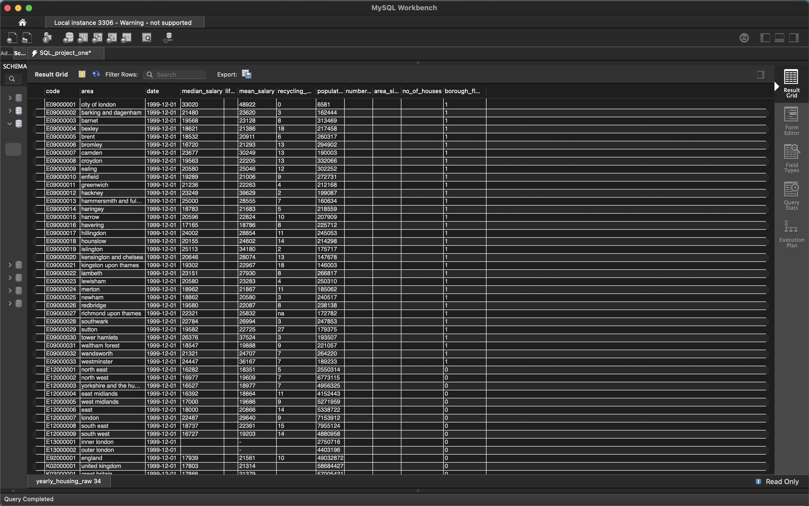
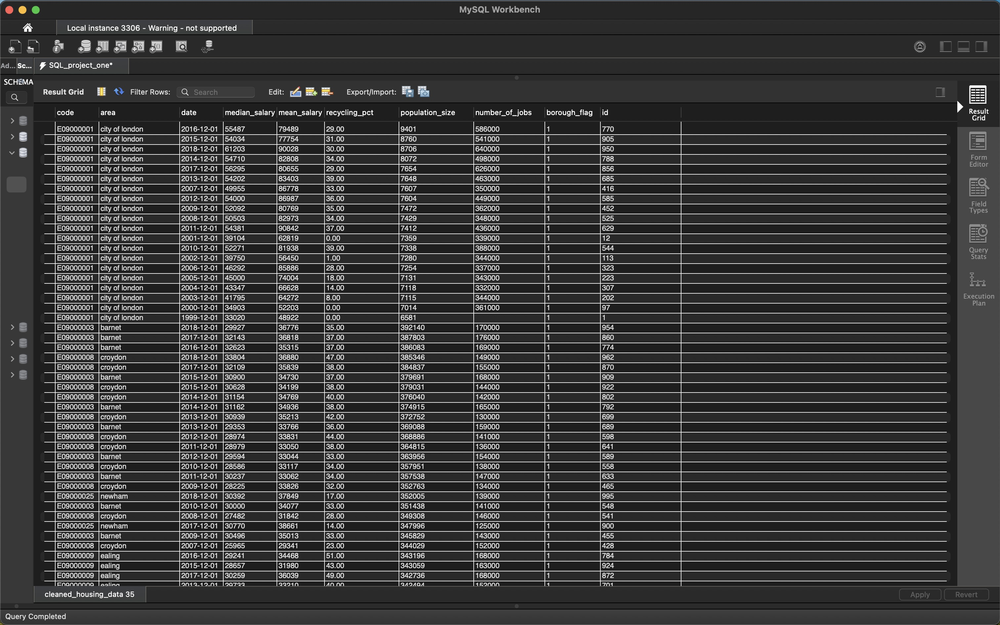

Project 1 -
London Job Data
Data Set: Press Here
GitHub File: Press Here
Tableau: Press Here
Overview:
This project focuses on cleaning a raw population dataset using SQL, removing irrelevant data, handling null values, converting data types, and preparing it for further analysis and visualisation in Tableau. The reason to pursue this project is to observe the relationship between population and several job factors.
Key Skills Used:
• SQL data manipulation: `SELECT`, `UPDATE`, `DELETE`, `ALTER TABLE`, `JOIN`
• Data cleaning: removing duplicates, handling NULL values
• Data transformation: converting data types, handling dates, standardising values
• Data visualisation: presenting data sets into easy-to-comprehend visualisations
Dataset Description:
The dataset contains London population data with various columns such as median salary, mean salary, population size, recycling percentage, and number of jobs. Several rows include invalid data, null values and non-borough regions, which need to be filtered out to ensure accurate analysis.
Why This Project is Worth Doing:
This project demonstrates essential SQL data cleaning skills required for data analysis. Cleaning data ensures accuracy, consistency, and relevance in datasets, which is crucial when preparing data for meaningful insights and visualisation. Additionally, it demonstrates handling real-world messy data before moving to visual analysis in Tableau.
Step-by-Step Guide for Data Cleaning:
- Inspecting the Original Dataset:
SELECT * FROM yearly_housing_raw; - Creating a Cleaned Table:
CREATE TABLE cleaned_housing_data AS SELECT * FROM yearly_housing_raw; - Removing Unnecessary Columns:
ALTER TABLE cleaned_housing_data DROP COLUMN no_of_houses, DROP COLUMN area_size, DROP COLUMN life_satisfaction; - Replacing Invalid Data in Mean Salary and Recycling Percentage:
UPDATE cleaned_housing_data SET mean_salary = NULL WHERE mean_salary = '-' OR mean_salary = '#';UPDATE cleaned_housing_data SET recycling_pct = NULL WHERE recycling_pct = '' OR recycling_pct = 'na'; - Removing Rows with Null Salary Fields:
DELETE FROM cleaned_housing_data WHERE median_salary IS NULL AND mean_salary IS NULL; - Identifying Non-Numeric Values:
SELECT * FROM cleaned_housing_data WHERE median_salary NOT REGEXP '^[0-9]+(\.[0-9]+)?$' OR mean_salary NOT REGEXP '^[0-9]+(\.[0-9]+)?$' OR recycling_pct NOT REGEXP '^[0-9]+(\.[0-9]+)?$'; - Replacing Non-Numeric Salary and Recycling Values with NULL:
UPDATE cleaned_housing_data SET median_salary = NULL WHERE median_salary NOT REGEXP '^[0-9]+(\.[0-9]+)?$';UPDATE cleaned_housing_data SET mean_salary = NULL WHERE mean_salary NOT REGEXP '^[0-9]+(\.[0-9]+)?$';UPDATE cleaned_housing_data SET recycling_pct = NULL WHERE recycling_pct NOT REGEXP '^[0-9]+(\.[0-9]+)?$'; - Converting Salary and Recycling Columns to Numeric Types:
ALTER TABLE cleaned_housing_data MODIFY median_salary DECIMAL(10, 2), MODIFY mean_salary DECIMAL(10, 2), MODIFY recycling_pct DECIMAL(5, 2); - Converting Date Column to DATE Format:
ALTER TABLE cleaned_housing_data MODIFY COLUMN date DATE;UPDATE cleaned_housing_data SET date = STR_TO_DATE(date, '%Y-%m-%d'); - Adding Auto-Incremented ID for Duplicate Management:
ALTER TABLE cleaned_housing_data ADD COLUMN id INT AUTO_INCREMENT PRIMARY KEY; - Removing Duplicate Rows:
DELETE t1 FROM cleaned_housing_data t1 JOIN cleaned_housing_data t2 ON t1.code = t2.code AND t1.date = t2.date AND t1.id > t2.id; - Removing Non-Borough Regions:
DELETE FROM cleaned_housing_data WHERE area IN ('england', 'scotland', 'wales', 'northern ireland', 'united kingdom', 'great britain', 'england and wales', 'inner london', 'outer london'); - Trimming Spaces and Standardising Area Names:
UPDATE cleaned_housing_data SET area = TRIM(LOWER(area)); - Removing Rows with Missing or Non-Meaningful Data:
DELETE FROM cleaned_housing_data WHERE median_salary IS NULL OR mean_salary IS NULL OR population_size IS NULL; - Converting Salary Columns to Integers for Visualisation:
ALTER TABLE cleaned_housing_data MODIFY COLUMN median_salary INT;ALTER TABLE cleaned_housing_data MODIFY COLUMN mean_salary INT; - Final Check of Distinct Areas:
SELECT DISTINCT area FROM cleaned_housing_data; - Final Check of Cleaned Dataset:
SELECT * FROM cleaned_housing_data;
 Final Result:

Tableau
Now that the dataset has been thoroughly cleaned and prepared, it is ready for visualisation. By building an interactive dashboard, we can effectively explore and highlight the relationships between key metrics such as the number of jobs, salaries and population size. The following four visualisations have been created:
Visualisations:
1. Jobs vs Population Size: This visualisation compares the average number of jobs available in each area with the population size, represented by a black line. The areas are colour-coded to indicate how well they provide jobs relative to their population, offering insight into employment opportunities for residents.
2. Population vs Jobs Ratio: This table highlights the ratio of jobs available to the population size in each area. It calculates the jobs-to-population ratio and ranks areas accordingly, providing a clear view of employment density and opportunities across regions.
3. Trend in Median Salary Over Time: This line chart visualises the upward trend of median salaries over the years, providing insights into how income levels have changed across different regions and time periods. It helps identify economic growth and salary progression in the population.
4. Average Salary vs Recycling Percentage: This dual-line graph compares the average salary and recycling percentage over time. It allows for the observation of any potential relationship between income levels and recycling habits, helping to determine if higher-income areas tend to recycle more effectively or not.

CONCLUDING REMARKS
This project has been a pivotal experience in applying my SQL data manipulation skills, particularly in data cleaning and transformation. By addressing issues such as missing values and duplicates, I learned the importance of ensuring data integrity for reliable analysis, requiring strong attention to detail. The process of visualising the relationships between jobs, salaries, and population size in Tableau has enhanced my understanding of effective data presentation. For instance, the correlation between average salary and recycling percentage suggests socio-economic patterns worth exploring.
As a starting point in my data analysis journey, I recognise that with each project, my skills in data visualisation and storytelling through data will improve. I look forward to leveraging these experiences to extract meaningful insights that drive decision-making in future analyses.